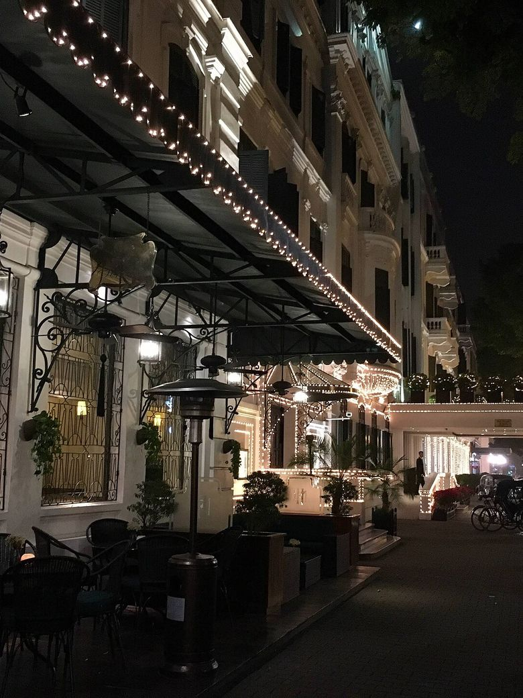
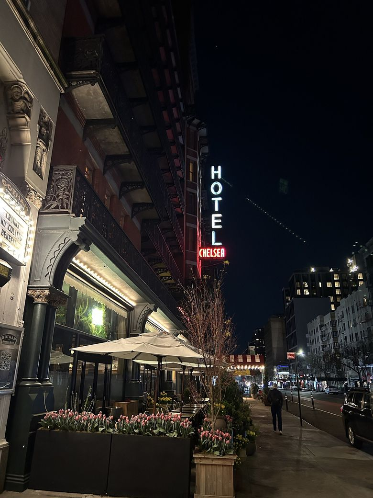
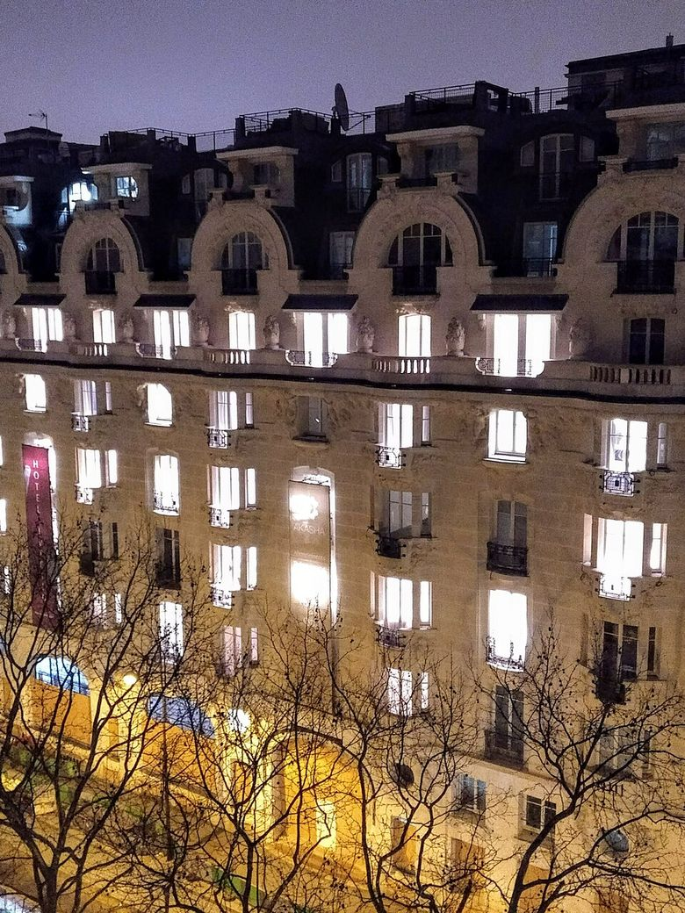
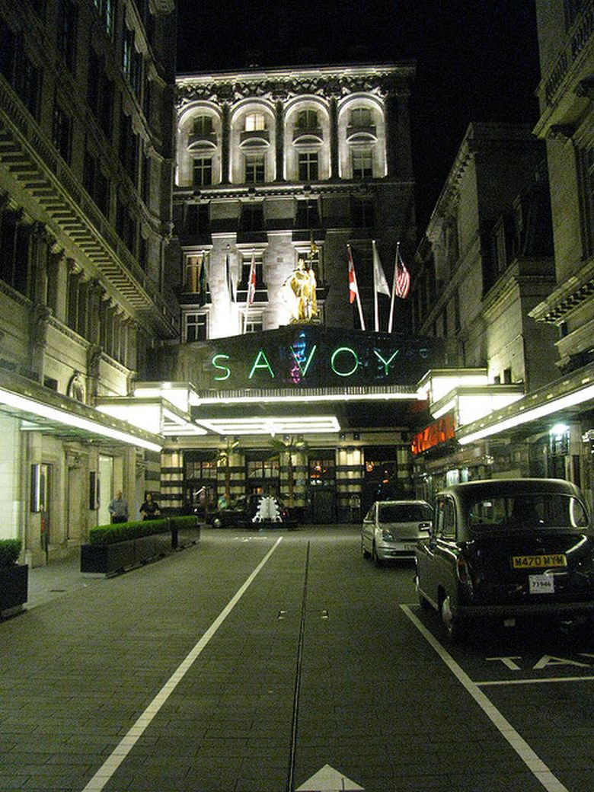
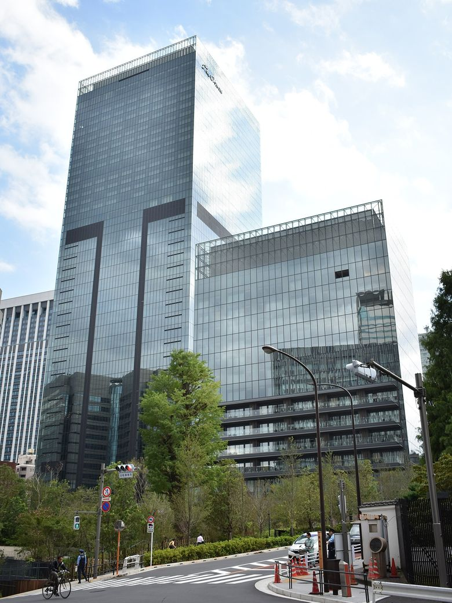
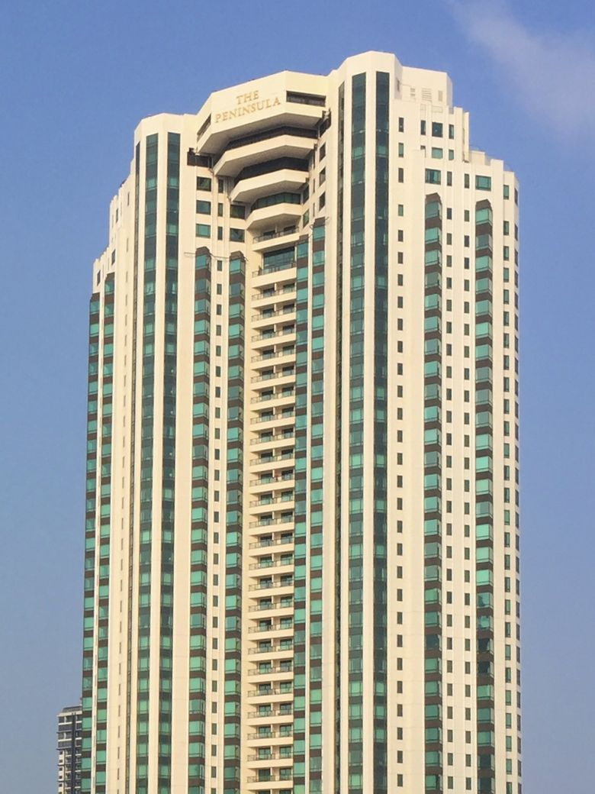
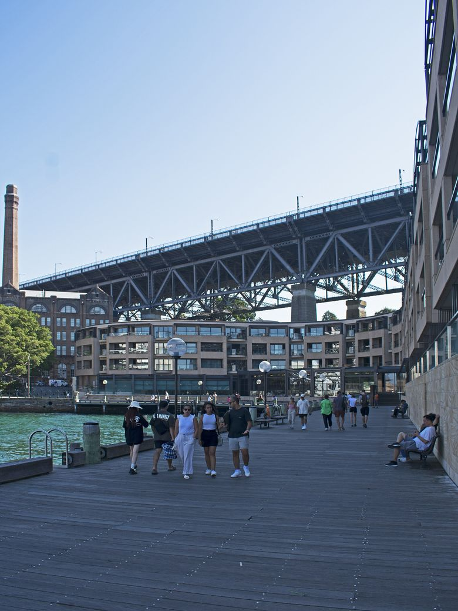
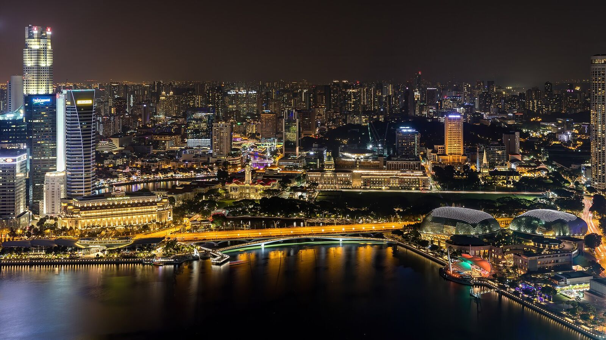

예시 프로필이에요. 이름, 평점, 후기 수는 모두 예시이고 실제 가입자가 아니에요.
골목 카페요? 제 단골집 알려드릴게요 😊
크루아상은 꼭 이 집에서 드셔보세요!
야시장은 7시 이후가 진짜예요 🌙
사진 맛집 골목, 같이 가요 📷
관광객 없는 트라토리아 데려갈게요
브런치 후에 서핑 구경 어때요? 🌊
도시를 고르면 그 도시의 숙소·관광지와 근처에 사는 현지인 친구를 지도에서 볼 수 있어요. 친구 활동 지역 표시는 예시 화면이에요.
